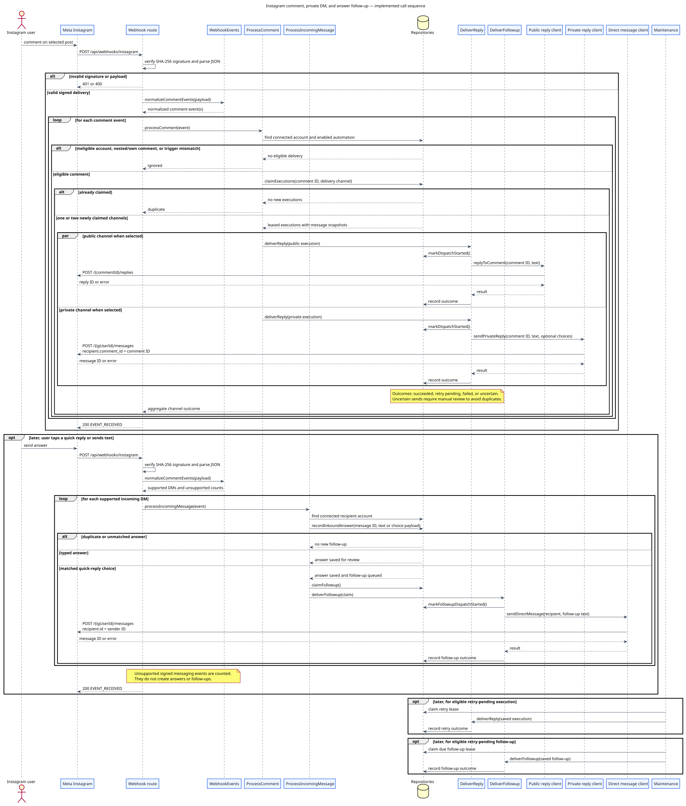

Instagram comment and DM automation — call sequence
Calls made after a signed comment or message webhook, including replies, answers, follow-ups, and retries.

Calls made after a signed comment or message webhook, including replies, answers, follow-ups, and retries.
